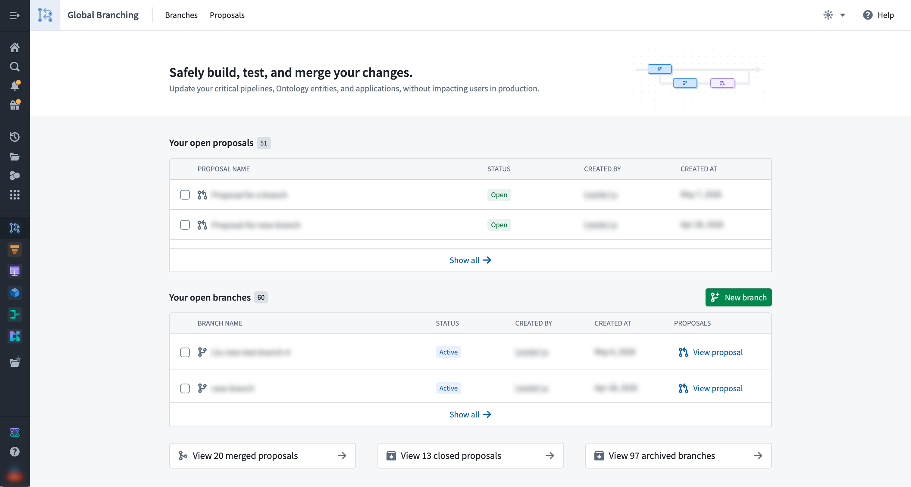

Global Branching (previously known as "Foundry Branching") lets you develop and test end-to-end workflows in the Palantir platform that would otherwise be too disruptive to run against a live production environment.
Global Branching provides a unified experience to make modifications across multiple applications on a single branch, test those changes end-to-end without disrupting the production environment, and merge those changes with a single click.

You can make changes to supported resource types on a single branch. You can also run actions on branches without writing back edits to the main branch.
For instance, take a workflow that consists of a simple pipeline in Pipeline Builder that outputs a dataset used to back an object type. With Global Branching, you can make changes to the logic and schema of your output dataset on a branch, see these changes in Ontology Manager on that same branch, and modify the object type definition as a result.
Global Branching also supports a review process; developers can add reviewers for different resources depending on each resource's approval policy. Once changes are finalized and approved, they can be merged into the main branch, ensuring a safe and controlled approach to updating and improving your workflows.
Global Branching enables development and testing of workflow changes on a separate branch. This is ideal for managing changes in a development environment, as it allows developers to work in isolation and only merge changes into the main branch when the feature is complete. Release management is the process of managing multiple versions of resources across distinct environments that serve different purposes.
Release management and Global Branching can work together harmoniously. They should not be seen as alternative solutions to the same problem, but rather complementary solutions to different problems.
For example, you can use release management and Global Branching together when developing a large feature that needs to be added to a workflow. Larger features could take a few weeks to develop and require foundational changes to dataset and object type schemas. You can develop this feature on a global branch and merge the changes into the development environment when it is completed. Then, you can use release management to deploy these changes to your test and production environments.